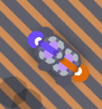

Pets!
Pets are loyal companions introduced in plugin v1.3. Although functionally useless, they are very cute.
What pets can't you have
You can't not have any sea units because they can't move on land since they are built for sea.
You can't have t5 since most are too big and would cause problems
Creating Pets
- Link your Discord account to your in-game account by using the +redeem command on Discord.
- Use the +addpet <species> <color> <name...> command.
- Use the /pet command in-game to spawn your pet.
Ranks
Your rank determines how many pets you can have, and the types of pets that you can have.
| Rank | Species | Max Pets |
|---|---|---|
| Corporal [2] | Tier 1 | 1 |
| Brigadier [3] | Tier 1 or 2 | 1 |
| Sargeant [4] | Tier 1 or 2 | 2 |
| Major [5] | Tiers 1 to 3 | 3 |
| Lieutenant [6] | Tiers 1 to 4 | 3 |
Food
One of pets' favorite hobbies is eating food. This occurs in two stages:
- Collecting: Mining
- Eating: Spinning
If the pet eats a certain amount of all types of food, it can increase its rank. Use the +pet (name) command to view the amount of food it has eaten.
| Food Eaten | Pet Rank |
|---|---|
| 500 | Soldier [1] |
| 1000 | Corporal [2] |
| 10k | Brigadier [3] |
| 100k | Sargeant [4] |
| 1 mil | Major [5] |
Stealth Mode
In order to avoid being targeted by turrets and enemies, pets will enter into "stealth mode" when within the firing range of a turret. This will show up as the pet temporarily becoming black.
Special pets
Players with the subrank Bug_chaser will get a special renale pet thats exclusive to that rank
for players with the subrank Watcher will get a special latum pet that also exclusive to that rank